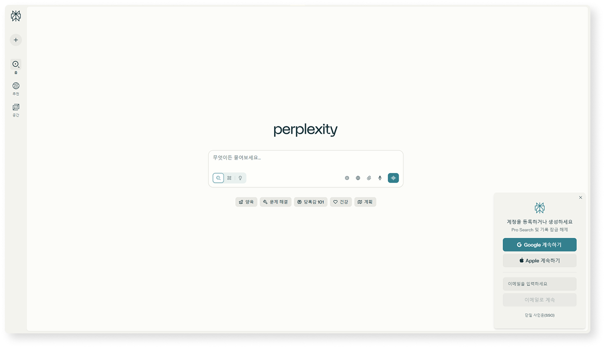

검색
일상적인 질문에 대한 빠른 답변
Pro로 더 많은 쿼리 받기
강력한 모델과 늘어난 한도로 3배
더 많은 소스
액세스를 위해 로그인하세요
연구
어떤 주제에 대한 심층 연구
Pro로 더 많은 쿼리 받기
더 많은 소스, 차트 및 고급 추론을 포함한
심층 보고서
액세스를 위해 로그인하세요
실험실
처음부터 프로젝트 생성
Pro로 더 많은 쿼리 받기
아이디어를 완성된 문서, 슬라이드, 대시
보드 등으로 전환하세요
액세스를 위해 로그인하세요
최고
각 쿼리에 대해 최적의 모델을 선택합니다
Sonar
Perplexity의 빠른 모델
클로드 4.0 소네트
앤트로픽의 고급 모델
GPT-4.1
OpenAI의 고급 모델
Gemini 2.5 Pro 06-05
Google의 최신 모델
추론
R1 1776
Perplexity의 편향 없는 추론 모델
Grok 4
xAI의 최신, 가장 강력한 추론 모델
o3
OpenAI의 추론 모델
o3-pro
OpenAI의 가장 강력한 추론 모델
클로드 4.0 소네트 생각하기
앤트로픽의 추론 모델
클로드 4.0 오퍼스 사고
안트로픽의 오퍼스 추론 모델과 사고